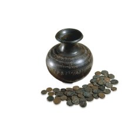

| |
The following list provides a sample of some of the research projects in which the Department is involved:
The Gloucester Hoard (Richard Abdy)
The Gloucester hoard is one of the largest coin hoards of any period found in Britain. It contains 15,544 late Roman silvered bronze coins minted at the end of the third century AD. Unusually, coins of the many third-century usurper emperors, common in other British hoards, are absent in this hoard. Although it was found in 1960, a catalogue has never been produced. This collaborative project with the National Museum of Wales and Nottingham University aims to publish this material fully.
Leonard Charles Wyon (Philip Attwood)
As an engraver to the Royal Mint, Leonard Wyon dominated coin and medal production in Britain during the second half of the nineteenth century. His medals portray many of the key figures and important historical events of Victorian Britain. The survival of Wyon's diary provides valuable information about his life, working practices and his links with other artists and institutions. The culmination of this research will be a fully annotated transcript of his diary, with an introduction to the life and work of the engraver and the rest of the Wyon family of artists, and appendices that trace in detail the production and reception of the coins, medals and other objects produced by Wyon and mentioned in the diary. The study is to be published by the British Numismatic Society in 2007.
English Medieval Coin Hoards (Barrie Cook)
In 2000 an initial volume by Marion Archibald and Barrie Cook published a major group of 12th and 13th century hoards. The next volume will publish details of over thirty coin hoards from the later middle ages, deposited in the period 1279-1485, among them the large Gorefield, Amble, Stanwix and Reigate hoards. The volume will represent a survey of the late medieval English currency, as well as being a straightforward publication of a significant body of research material.
Money and History in the North Sea World c.500-1200 (Barrie Cook, Gareth Williams)
Papers have been contributed by current and past British Museum staff, as well as leading scholars throughout the UK and European numismatic community. It is to be published in 2005 and will be a major contribution to early medieval monetary history, with sections of particular significance on the use of money in England after the withdrawal of Rome, the movement of coin and silver around the North Sea and Baltic in the Viking Age, and the development of a unified currency in early medieval England.
City and Countryside: urban and rural views on coins, medals and banknotes from antiquity to the 19th century (Barrie Cook, Virginia Hewitt, Barber Institute)
This project will combine the development of ongoing and existing work by British Museum curators with new work originating in the Barber Institute to produce a cycle of three exhibitions succeeding each other in the Barber's new coin gallery, to be accompanied by a publication with chapters on each of these. The overarching theme is the depiction of architecture and landscape on the miniature forms of money and medals, and the exploration of the origin and purpose of this superficially unlikely development across two millennia of European and Mediterranean history. The book will be prepared during late 2004-2005 and the current plan is for the exhibitions to run between 2005 and 2008/9.
Coinage of the Kushan Dynasty (Joe Cribb)
The Kushans ruled ancient Afghanistan, Pakistan and northern India from the 1st to the 4th century AD. The fourth Kushan king, Kanishka I (c. AD 127-150) adopted Buddhism towards the end of his reign and summoned a council of Buddhist teachers in Kashmir to re-codify the Buddhist religion. Coins are the most important historical source for this dynasty. Together with inscriptions and archaeology, they provide an insight into the political, cultural and religious history of this period. The publication of a catalogue of the Kushan coins in the British Museum will be one outcome of this research project.
1000 Cities, 1000 Years, Central Asian Archaeology and History from Alexander the Great until the rise of Islam (Joe Cribb, Georgina Herrmann)
A British Academy publication is planned in 2005 of the British Academy Conference on ancient Central Asian Archaeology and History. This will present about twenty five papers, including contributions from British Museum curators Joe Cribb, Helen Wang and Vesta Curtis.
The Dabuyid Ispahbads and Early ‘Abbasid Governors of Tabaristan: History and Numismatics by H.M. Malek (edited by Vesta Sarkhosh Curtis and Richard Ashton)
This book brings together the history and numismatics of the Dabuyid Ispahbads and early ‘Abbasid governors of Tabaristan, NW Iran, in the late first and second centuries Hijra. The coins of Tabaristan follow the Sasanian tradition and show on the obverse the bust of the king. The reverse depicts a Zoroastrian fire altar. All the different coin types so far known from major collections, including the British Museum, are listed in a detailed catalogue section. The Book was published by the RNS in October 2004.
Sasanian Coin Project with the National Museum of Iran and British Institute of Persian Studies (Vesta Sarkhosh Curtis)
This collaborative research project aims to reorganise, register, photograph and catalogue some 4000 Sasanian coins in the Tehran Museum. Together with the British Museum's collection of Sasanian coins, it will form part of a comprehensive database of this coinage. A full publication of the collection in Tehran Museum will also result from this project. Volume I of the database and the Sylloge of coins of Ardashir I - Kavad I (3-6 century AD) will be on-line in 2005. Volume II of the database and sylloge of coins of Khusrow I - Yazdgird III (6-7 century AD) is planned for completion in 2006.
Transcription and translation of a previously unknown fifteenth-century text on money, written by the Abbot of St Albans (Katie Eagleton) Publication planned as article.
From Persepolis to the Punjab. Nineteenth-century Discoveries (E. Errington and V. Sarkhosh Curtis)
The book derives from an exhibition (Gallery 69a, September-December 1997) and seminar on nineteenth-century discoveries in Iran, Afghanistan and north-west Pakistan. It concentrates on the pioneering work done in these regions, with emphasis on the collections now in the British Museum. The introduction (Errington and Curtis) provides short biographies of eight pioneers in the field, together with a survey - based on current research - of the relevant empires and dynasties, religions and scripts in the period 6th century BC - 7th century AD. The second part of the volume comprises six seminar papers by Joe Cribb, Vesta Curtis, Elizabeth Errington, Jean-Marie Lafont, St John Simpson and Helen Wang. The book is due for publication by BMP in September 2005.
The Masson Project (Elizabeth Errington)
Between 1833 and 1838 the British explorer turned spy Charles Masson amassed a huge collection of coins and other artefacts whilst working for the British East India Company at the site of Begram in Afghanistan. During this period he also recorded and excavated about 50 Buddhist monuments. Masson's own detailed and illustrated accounts are being used to help to identify and document his collection in the British Museum, as well as the 15,000 or so coins which were transferred from the India Office Library to the British Museum on permanent loan in 1995. The recent exhibition 'Discovering Ancient Afghanistan: The Masson Collection' was one product of this research, to be followed in 2007 with an archive, book and study collection.
Coinage of the Bactrian and Indian Greeks (Osmund Bopearachchi, Paris, CNRS, Joe Cribb, Elizabeth Errington)
After Alexander the Great's conquest of Afghanistan and Pakistan (c. 327 BC), the region was ruled by Greek kings until the first century BC. The British Museum holds the world's most important collection of coins issued by these kings. The Sri Lankan scholar Osmund Bopearachchi is working with the British Museum to publish a new catalogue of the collection last published in 1885.
SCBI Anglo-Saxon Volume 1 (Anna Gannon)
This project has been carried out by Dr Anna Gannon, while working for the British Museum in 2002-03, and is now being completed in her own time. This involves publication of the British Museum's collection of Anglo-Saxon coins from c. AD 600-750 in the SCBI series.
Sylloge Nummorum Graecorum (Andrew Meadows)
The Sylloge Nummorum Graecorum is a British Academy Research Project, the purpose of which is to publish illustrated catalogues of Greek coins in public and private collections in the British Isles. SNG has retained the traditional, very broad, definition of 'Greek' to include the coins produced by all ancient civilisations of the Mediterannean and neighbouring regions except Rome, though it does include the Roman Provincial series often known as 'Greek Imperials'
The project was inaugurated in 1931 E.S.G. Robinson, curator of Greek coins at the British Museum. A new and distinctive format was used, with text and illustrations on facing pages. This meant that only limited text was included, with the illustrations having greater prominence than in earlier types of catalogues, and to some extent replacing textual descriptions. This is because the primary purpose of SNG was to make much more material available for study. This format has been retained ever since and has been adopted, along with the title Sylloge Nummorum Graecorum, for similar projects in many other countries, including Denmark, France, Germany, Greece, Israel, Sweden, Switzerland and the United States.
To date, the British SNG project has published over 30 fascicules from many different public and private collections, and the total world-wide exceeds 120 volumes. In recent years focus has moved to electronic publication, and the SNG Database project, based at the British Museum, has generated a database of over 12,000 coins that can now be consulted online.
The Athenian Standards Decree (Andrew Meadows)
This project began with a conference, co-organised with the Centre for the Study of Ancient Documents, and the Corpus Christi Classics Centre at the University of Oxford, in April 2004. The conference was funded with grants from the British Academy and the Craven Fund of Oxford University. The aim now is to develop out of the presentations given to the conference a thorough re-edition of the famous Standards Decree (IG I3 1453) with texts, commentary, translations and a series of essays on the social, political and economic background to the decree.
Money on the Silk Road: the evidence from Eastern Central Asia to c.AD 800 (with a catalogue of the coins collected by Sir Aurel Stein) (Helen Wang)
By bringing together the coin and contemporary documentary evidence (Chinese, Kharoshthi, Tocharian, Khotanese and Tibetan) found at sites in northwestern China, this study creates a new framework for understanding money at the eastern end of the Silk Road. Publication due autumn 2004 by British Museum Press.
Metallurgical analysis of Chinese coins at the British Museum (H. Wang, M. Cowell, J. Cribb and S. Bowman)
This book brings together all the data collected from metallurgical analysis of Chinese coins at the British Museum over the last 15 years. For completion in January 2005 as a British Museum Research Publication.
Sir Aurel Stein: the collections in Hungary (Helen Wang)
Since the publication in 2002 of the Stein collections at the Library of the Hungarian Academy of Sciences, Budapest, some important new Stein material has come to light. The aim of this project is to catalogue and publish this material.
The Tamba Collection at the British Museum (Helen Wang)
In the 1880s the British Museum acquired 'the Tamba Collection', a superb collection of East Asian coins that had once belonged to Kuchiki Ryukyo (Masatsuna, of Tamba, 1750-1802). Kuchiki Ryukyo is Japan's most famous coin specialist, renowned for his collecting, his publications and his collaborative work with Isaac Titsingh of The Netherlands. A publication is planned.
Mao badges (Helen Wang)
The aim of this project, prompted by the recent donation of 200 Mao badges, is to produce a catalogue of the British Museum's Mao badges collection, with introduction and glossaries.
Tutbury Castle (Gareth Williams)
This site has probably been home to fortified settlements since the Iron Age, and fieldwork this summer (2004) suggests that occupation of some sort may now be traced back to the Mesolithic period. The site has been developed as a castle since shortly after the Norman Conquest. Destroyed and rebuilt on numerous occasions during the Middle Ages, the castle is best known as the least comfortable prison of Mary Queen of Scots during her exile in England. The castle has been in ruin since it was partially destroyed during the English Civil War. The castle is also associated with the Tutbury hoard, the largest hoard of medieval coins found in England, part of which is in the BM collection. A research project is now underway to bring together archaeological and documentary evidence to produce a definitive history of the castle and the surrounding area, incorporating unpublished material from earlier excavations.
SCBI Anglo-Saxon Volume 10 (Gareth Williams)
The discovery in 1997 of a hoard of around 500 late Anglo-Saxon coins has prompted a study of the 'Expanding Cross' coinage of Edward the Confessor (1042-66). Apart from a handful of earlier types, all the coins within the hoard are of a heavy sub-type of Expanding Cross, calling into question the established chronology for the type. This project seeks to reassess this coinage against a background of late Anglo-Saxon kingship and economy, and the political events of the reign of Edward the Confessor. A detailed study (and corpus) of the coinage will form a substantial scholarly introduction to a volume of the SCBI series, including the coins of the Expanding Cross and Pointed Helmet types in the BM collection. The Sylloge volume will be published in book form, the catalogue section will at a later date be incorporated into the online database of the SCBI series as a whole.
Viking warfare and military organisation (Gareth Williams)
Warfare is one of the defining aspects of the Viking expansion which made such a dramatic impact on the history of northern europe from the late 8th century to c. 1100. This study considers the viking expansion against the background of social and political structures, and seeks to establish to what extent the military activity of 'Vikings' can be distinguished meaningfully from other early medieval warfare. The project considers warfare through a combination of historical and archaeological evidence, and provides the first substantial study in English of the underlying military organisation of Scandinavian forces in this period, and the relationship between changing structures and state formation in the Scandinavian homelands and in the areas they attacked. Publication is planned for Autumn 2005.
Iron Age Britain (Jonathan Williams)
A book on late Iron Age Britain is planned with J D Hill (Department of Pre-history and Europe) for publication in 2006. The book will look at the archaeology, culture, and history of Britain from about 200 BC down to the Roman invasion.
Essays in Honour of Richard Reece (Jonathan Williams) Publication of essays from a conference in honour of Richard Reece, with Oxbow Press. The expected submission date is autumn 2005, with publication date 2006. This group of essays is intended to exemplify how far things have progressed since the groundbreaking publication of Coins and the Archaeologist in 1974, of which Richard was co-editor, and to set agendas for the future in the study of coins and archaeology.
|
|

Bronze reliquary and Kushan coins from a Buddhist relic deposit.
Wardka stupa deposit, south-east Afghanistan, Gandhara period, late
2nd century AD.
|
|
|
|